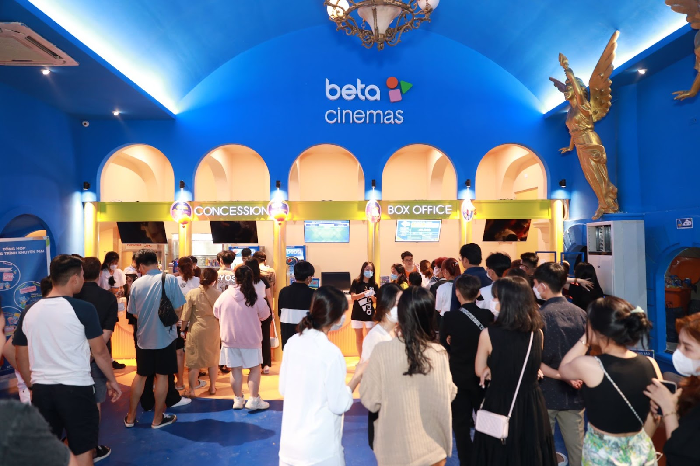

INDONESIA CÓ THÊM MỘT TỈ PHÚ ĐI LÊN TỪ KINH DOANH RẠP CHIẾU PHIM
Tháng 8 vừa qua, Indonesia đã có thêm một tỉ phú nhờ thương vụ IPO của chuỗi rạp chiếu phim Cinema XXI trên sàn giao dịch chứng khoán ở quốc gia này với giá đóng cửa tăng 17% lên mức 316 IDR (0,02 USD).
Thông qua IPO, Cinema XXI huy động được 2,2 ngàn tỉ IDR (145 triệu USD), với mức định giá 22,5 ngàn tỉ IDR (1,5 tỉ USD). Thương vụ này đã đưa “ông trùm điện ảnh” Benny Shuherman, người đồng sáng lập và là cổ đông lớn của công ty, lên hàng tỷ phú với giá trị tài sản ròng 1,1 tỉ USD.
Sau khi nhận được khoản đầu tư 260 triệu USD từ GIC Singapore năm 2016, Cinema XXI phát triển mạnh mẽ, thống lĩnh thị trường với hơn 1.200 phòng chiếu khắp cả nước.

Dù cùng thuộc khối ASEAN và có nhiều điểm tương đồng về văn hoá, lịch sử cũng như tiềm lực kinh tế, nhưng Indonesia đã có phần đi trước Việt Nam trong lĩnh vực rạp chiếu bóng từ nhiều năm trước. Năm 2012, Indonesia đã có 145 cụm rạp với 609 phòng chiếu, trong khi Việt Nam chỉ có 74 cụm rạp và 209 phòng chiếu khắp cả nước.
Đến năm 2019, số lượng phòng chiếu tại Indonesia đã lên đến con số gần 1.800 còn Việt Nam chỉ mới vượt qua mốc 1.000 tại thời điểm đó. Điều khác biệt nhất giữa thị trường hai nước chính là người Indonesia đã nhạy bén và chiếm lĩnh thị phần trước, thay vì để các thương hiệu ông lớn nước ngoài tiếp cận và áp đảo như tại Việt Nam.
Dù có phần phát triển chậm hơn nhưng số liệu cho thấy thị trường rạp chiếu Việt Nam đang có tỷ lệ phục hồi sau COVID-19 ấn tượng không kém Indonesia. Ông lớn Cinema XXI dù chiếm gần 60% thị phần tại Indonesia và đã có dấu hiệu phục hồi sau lỗ nhưng doanh thu năm 2022 chỉ đạt 63,68% so với năm 2019 (trước dịch), thấp hơn 30 tỉ USD. Trong khi đó, năm 2022, toàn thị trường rạp chiếu Việt đạt 78% doanh thu so với năm 2019, đặc biệt, một thương hiệu nội địa nổi bật là Beta Cinemas đạt thành tích tăng trưởng 177% so với năm 2019 và tăng gấp đôi thị phần sau khi đi qua dịch.
Qua thương vụ nhận 8 triệu USD từ quỹ đầu tư của Nhật Bản Daiwa Pi Partners cùng với hai lần gọi vốn thành công từ Vietnam Investment Group và tập đoàn tài chính Blue HK đến từ Hồng Kông, Beta Cinemas đang thể hiện rõ quyết tâm mở rộng quy mô với hướng đi mới táo bạo là mô hình nhượng quyền. Mô hình này đang gây được nhiều sự chú ý trong giới vì mở ra cơ hội cho các nhà đầu tư nhỏ lẻ tham gia vào thị trường rạp chiếu vốn được xem là sân chơi chỉ dành riêng cho các ông lớn trước đây.
Beta Cinemas chú tâm đến phân khúc tầm trung dễ tiếp cận và có ít sự cạnh tranh hơn, xây dựng bài toán kinh doanh hoàn vốn nhanh chỉ trong 3-4 năm với mức đầu tư thấp, chiến lược vận hành tối ưu, tiết kiệm chi phí branding cho các nhà đầu tư. Phong cách trang trí hiện đại, phối màu sắc đậm tính nghệ thuật của Beta Cinemas cũng đang gây chú ý mạnh mẽ với giới trẻ.
.png)
Đối chiếu với sự sôi động tại Indonesia, thị trường rạp chiếu Việt Nam rõ ràng vẫn còn rất nhiều tiềm năng phát triển khi tỉ lệ phòng chiếu của ta còn khá thấp (11 phòng/triệu dân) và có đến 65% dân số Việt Nam đang thiếu tiếp cận với rạp chiếu phim, đặc biệt những tầng lớp dân cư có kinh tế thấp ở vùng ngoại ô và nông thôn.
Nếu những thương hiệu nội địa như Beta Cinemas cũng nhận được những khoản đầu tư khổng lồ như Cinema XXI và thành công nhân rộng mô hình nhượng quyền ra khắp cả nước thì viễn cảnh tương lai khi người Việt chiếm lĩnh thị trường Việt hoàn toàn có khả năng xảy ra.